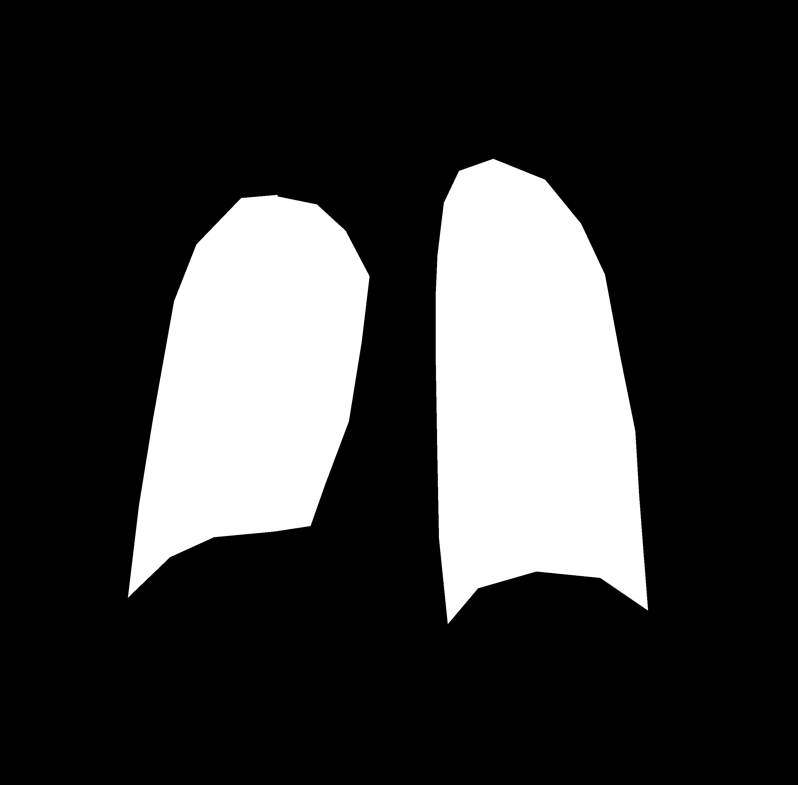
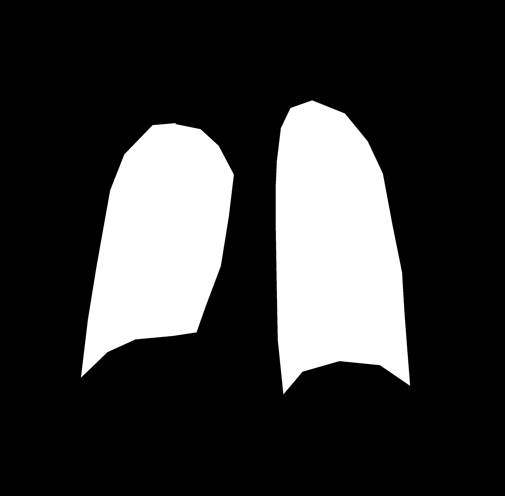
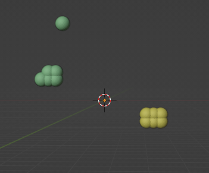
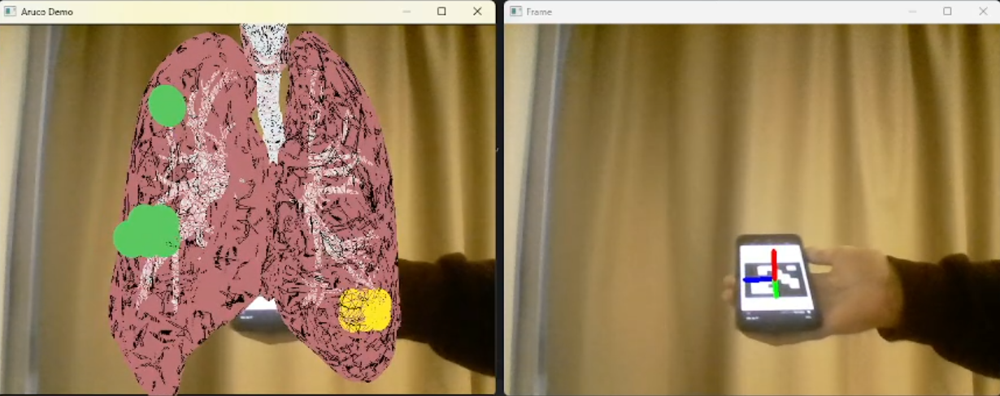

Description
This project visualizes lung infection data by generating a heatmap from AI predictions, creating a 3D model of infection zones, and displaying it in augmented reality using ArUco markers for an interactive analysis of lung health.
Model Creation and Training
The core of this project revolves around using an AI model to generate attention maps that highlight potential infection zones in 3D lungs. The model, based on ViTReg-IP, was trained on the RALO dataset.
The training process required creating a RaloDataset class (handled by data.py) to prepare and normalize the data.
I modified the model architecture in net.py from Inception to vit_tiny_patch16_224 to generate attention maps. Additionally, functions were updated for compatibility with modern syntax (see there).
To utilize the trained model, I created using_net.py, a script that loads the pre-trained model and generates heatmaps from test images.
The most important file, Attention_map.py, takes as input an image, its corresponding mask from the Kaggle dataset, and the path for saving the resulting heatmap.
This file calls the model, passes the image and mask, and outputs the heatmap, which is then saved for visualization.
 

3D Model Creation
The second phase of this project involves transforming the heatmap generated from the AI model into a 3D model represented by OBJ and MTL files.
This is handled by the sphere.py script, which analyzes the heatmap and places spheres at key locations corresponding to infection zones detected in the lungs.
The script calculates the distance between the infection zones (yellow regions on the heatmap) and nearby points to define sphere placement.
Each sphere is positioned based on the pixel's location and color, creating a visual representation of the infection's spread. The script then saves the 3D object and material files for later visualization.
A sensitive threshold parameter can be passed to the script to influence the number of spheres modeled. This sensitivity can sometimes lead to the visualization of points at the edges of the heatmap, which may not represent significant infection zones.

Displaying 3D Model with Aruco Marker
The third phase of this project involves displaying the 3D model using an Aruco marker. This implementation is based on the OpenCV_AR GitHub repository, which required modifications to ensure the code functions correctly and allows for multiple models to be displayed simultaneously.
For this purpose, a 3D model of lungs was utilized, which can be found at this link. The model was scaled in Blender to perfectly fit the heatmap generated in the previous step.
Once the lungs model is ready, the 3D model generated from the heatmap is displayed on top of it, providing a comprehensive visualization of the infection zones.
The ar_entrance.py file is used to launch the application, requiring the path to the 3D model of the heatmap as a parameter.
